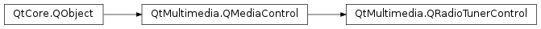

QRadioTunerControl¶
Detailed Description¶
The
PySide2.QtMultimedia.QRadioTunerControlclass provides access to the radio tuning functionality of aPySide2.QtMultimedia.QMediaService.If a
PySide2.QtMultimedia.QMediaServicecan tune an analog radio device it will implementPySide2.QtMultimedia.QRadioTunerControl. This control provides a means to tune a radio device to a specificfrequencyas well as searchforwardsandbackwardsfor a signal.The functionality provided by this control is exposed to application code through the
PySide2.QtMultimedia.QRadioTunerclass.The interface name of
PySide2.QtMultimedia.QRadioTunerControlisorg.qt-project.qt.radiotunercontrol/5.0as defined inQRadioTunerControl_iid().
-
class
PySide2.QtMultimedia.QRadioTunerControl([parent=nullptr])¶ Parameters: parent – PySide2.QtCore.QObjectConstructs a radio tuner control with the given
parent.
-
PySide2.QtMultimedia.QRadioTunerControl.antennaConnectedChanged(connectionStatus)¶ Parameters: connectionStatus – PySide2.QtCore.bool
-
PySide2.QtMultimedia.QRadioTunerControl.band()¶ Return type: PySide2.QtMultimedia.QRadioTuner.BandReturns the frequency band a radio tuner is tuned to.
-
PySide2.QtMultimedia.QRadioTunerControl.bandChanged(band)¶ Parameters: band – PySide2.QtMultimedia.QRadioTuner.Band
-
PySide2.QtMultimedia.QRadioTunerControl.cancelSearch()¶ Stops scanning for a signal.
-
PySide2.QtMultimedia.QRadioTunerControl.error(err)¶ Parameters: err – PySide2.QtMultimedia.QRadioTuner.Error
-
PySide2.QtMultimedia.QRadioTunerControl.error() Return type: PySide2.QtMultimedia.QRadioTuner.ErrorReturns the error state of a radio tuner.
-
PySide2.QtMultimedia.QRadioTunerControl.errorString()¶ Return type: unicode Returns a string describing a radio tuner’s error state.
-
PySide2.QtMultimedia.QRadioTunerControl.frequency()¶ Return type: PySide2.QtCore.intReturns the frequency a radio tuner is tuned to.
-
PySide2.QtMultimedia.QRadioTunerControl.frequencyChanged(frequency)¶ Parameters: frequency – PySide2.QtCore.int
-
PySide2.QtMultimedia.QRadioTunerControl.frequencyRange(b)¶ Parameters: b – PySide2.QtMultimedia.QRadioTuner.BandReturn type: Returns a frequency
band‘s minimum and maximum frequency.
-
PySide2.QtMultimedia.QRadioTunerControl.frequencyStep(b)¶ Parameters: b – PySide2.QtMultimedia.QRadioTuner.BandReturn type: PySide2.QtCore.intReturns the number of Hertz to increment the frequency by when stepping through frequencies within a given
band.
-
PySide2.QtMultimedia.QRadioTunerControl.isAntennaConnected()¶ Return type: PySide2.QtCore.boolIdentifies if there is an antenna connected to the device.
Returns true if there is a connected antenna, and false otherwise.
-
PySide2.QtMultimedia.QRadioTunerControl.isBandSupported(b)¶ Parameters: b – PySide2.QtMultimedia.QRadioTuner.BandReturn type: PySide2.QtCore.boolIdentifies if a frequency
bandis supported.Returns true if the band is supported, and false if it is not.
-
PySide2.QtMultimedia.QRadioTunerControl.isMuted()¶ Return type: PySide2.QtCore.boolIdentifies if a radio tuner’s audio output is muted.
Returns true if the audio is muted, and false if it is not.
-
PySide2.QtMultimedia.QRadioTunerControl.isSearching()¶ Return type: PySide2.QtCore.boolIdentifies if a radio tuner is currently scanning for signal.
Returns true if the tuner is scanning, and false if it is not.
-
PySide2.QtMultimedia.QRadioTunerControl.isStereo()¶ Return type: PySide2.QtCore.boolIdentifies if a radio tuner is receiving a stereo signal.
Returns true if the tuner is receiving a stereo signal, and false if it is not.
-
PySide2.QtMultimedia.QRadioTunerControl.mutedChanged(muted)¶ Parameters: muted – PySide2.QtCore.bool
-
PySide2.QtMultimedia.QRadioTunerControl.searchAllStations([searchMode=QRadioTuner.SearchFast])¶ Parameters: searchMode – PySide2.QtMultimedia.QRadioTuner.SearchModeStarts a scan through the whole frequency band searching all stations with a specific
searchMode.
-
PySide2.QtMultimedia.QRadioTunerControl.searchBackward()¶ Starts a backwards scan for a signal, starting from the current
PySide2.QtMultimedia.QRadioTunerControl.frequency().
-
PySide2.QtMultimedia.QRadioTunerControl.searchForward()¶ Starts a forward scan for a signal, starting from the current
PySide2.QtMultimedia.QRadioTunerControl.frequency().
-
PySide2.QtMultimedia.QRadioTunerControl.searchingChanged(searching)¶ Parameters: searching – PySide2.QtCore.bool
-
PySide2.QtMultimedia.QRadioTunerControl.setBand(b)¶ Parameters: b – PySide2.QtMultimedia.QRadioTuner.BandSets the frequecy
banda radio tuner is tuned to.Changing the frequency band will reset the frequency to the minimum frequency of the new band.
-
PySide2.QtMultimedia.QRadioTunerControl.setFrequency(frequency)¶ Parameters: frequency – PySide2.QtCore.intSets the
frequencya radio tuner is tuned to.
-
PySide2.QtMultimedia.QRadioTunerControl.setMuted(muted)¶ Parameters: muted – PySide2.QtCore.boolSets the
mutedstate of a radio tuner’s audio output.
-
PySide2.QtMultimedia.QRadioTunerControl.setStereoMode(mode)¶ Parameters: mode – PySide2.QtMultimedia.QRadioTuner.StereoModeSets a radio tuner’s stereo
mode.See also
PySide2.QtMultimedia.QRadioTunerControl.stereoMode()QRadioTuner.StereoMode
-
PySide2.QtMultimedia.QRadioTunerControl.setVolume(volume)¶ Parameters: volume – PySide2.QtCore.intSets the percentage
volumeof a radio tuner’s audio output.
-
PySide2.QtMultimedia.QRadioTunerControl.signalStrength()¶ Return type: PySide2.QtCore.intReturn a radio tuner’s current signal strength as a percentage.
-
PySide2.QtMultimedia.QRadioTunerControl.signalStrengthChanged(signalStrength)¶ Parameters: signalStrength – PySide2.QtCore.int
-
PySide2.QtMultimedia.QRadioTunerControl.start()¶ Activate the radio device.
-
PySide2.QtMultimedia.QRadioTunerControl.state()¶ Return type: PySide2.QtMultimedia.QRadioTuner.StateReturns the current radio tuner state.
-
PySide2.QtMultimedia.QRadioTunerControl.stateChanged(state)¶ Parameters: state – PySide2.QtMultimedia.QRadioTuner.State
-
PySide2.QtMultimedia.QRadioTunerControl.stationFound(frequency, stationId)¶ Parameters: - frequency –
PySide2.QtCore.int - stationId – unicode
- frequency –
-
PySide2.QtMultimedia.QRadioTunerControl.stereoMode()¶ Return type: PySide2.QtMultimedia.QRadioTuner.StereoModeReturns a radio tuner’s stereo mode.
See also
PySide2.QtMultimedia.QRadioTunerControl.setStereoMode()QRadioTuner.StereoMode
-
PySide2.QtMultimedia.QRadioTunerControl.stereoStatusChanged(stereo)¶ Parameters: stereo – PySide2.QtCore.bool
-
PySide2.QtMultimedia.QRadioTunerControl.stop()¶ Deactivate the radio device.
-
PySide2.QtMultimedia.QRadioTunerControl.volume()¶ Return type: PySide2.QtCore.intReturns the volume of a radio tuner’s audio output as a percentage.
-
PySide2.QtMultimedia.QRadioTunerControl.volumeChanged(volume)¶ Parameters: volume – PySide2.QtCore.int
© 2018 The Qt Company Ltd. Documentation contributions included herein are the copyrights of their respective owners. The documentation provided herein is licensed under the terms of the GNU Free Documentation License version 1.3 as published by the Free Software Foundation. Qt and respective logos are trademarks of The Qt Company Ltd. in Finland and/or other countries worldwide. All other trademarks are property of their respective owners.